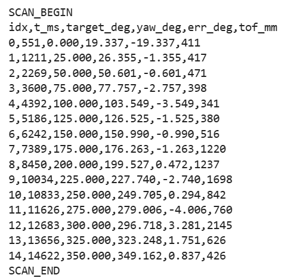
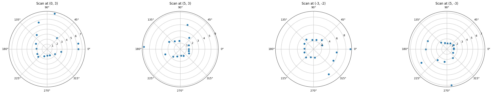
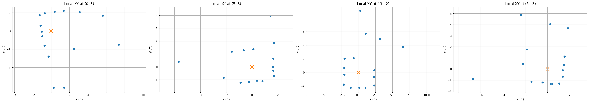
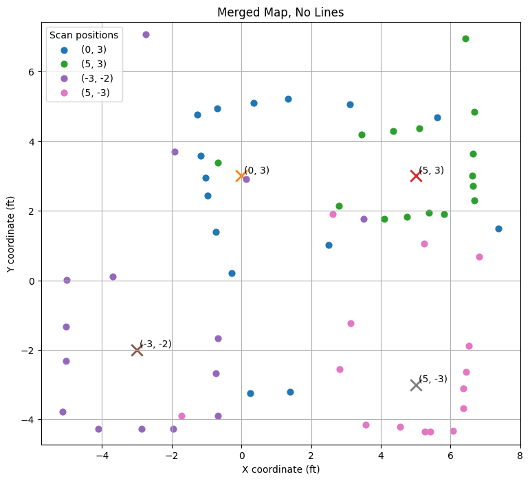
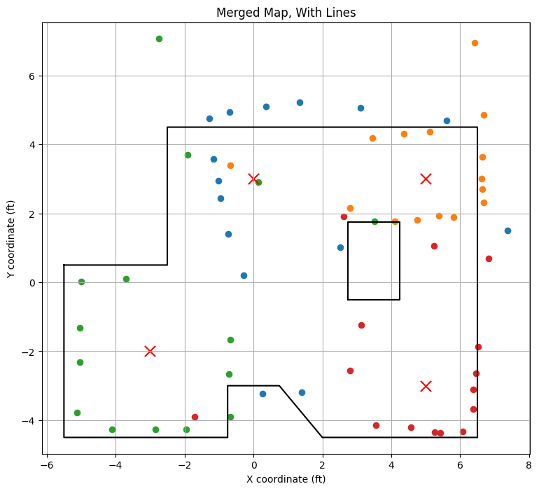

Hetao Yin (Hubery) — ECE 5160 Fast Robots
In this lab, I built a map of the front room using the robot’s ToF sensor and IMU. I chose orientation control rather than open-loop control. The robot rotated in small on-axis increments, paused briefly to let the ToF measurement settle, and then sent the scan back to the computer over BLE for post-processing. I collected scans at the four marked positions (-3,-2), (5,3), (0,3), and (5,-3), which are the locations specified by the lab.
I used the IMU yaw estimate instead of assuming equally spaced angles. In practice, the robot did not land perfectly at every nominal 25° step, so trusting the measured orientation was more accurate than trusting the commanded spacing. After collecting all scans, I transformed the measured points into the inertial frame of the room, plotted all datasets together, and then drew a line-based map on top.
My scan controller was based on a simple state machine. At each scan position, the robot alternated between two phases: TURN and MEASURE. During the turn phase, a PID orientation controller drove the robot toward the next angular target. Once the angular error was small enough, the robot stopped, waited for the ToF reading to update, logged the reading, and then advanced to the next angular step.
I aimed for roughly 25° angular increments and 15 samples over one rotation, which satisfies the lab recommendation of at least 14 readings for orientation-based control. The final controller produced scans that were dense enough to capture the room shape while still remaining simple enough to debug and tune.
I used PID orientation control with IMU yaw feedback. This was more reliable than open loop on my robot because the wheel response was not perfectly symmetric, and purely time-based turning would accumulate large angular spacing errors. The controller drove the robot in place by commanding equal and opposite wheel motions.
void set_turn_cmd(int u) {
u = clamp255(u);
if (abs(u) < U_DEADBAND) {
stop_motors();
return;
}
if (u > 0) {
apply_one_motor(L1, L2, u, LEFT_MOTOR_DEAD_PWM, LEFT_TURN_SCALE);
apply_one_motor(R1, R2, -u, RIGHT_MOTOR_DEAD_PWM, RIGHT_TURN_SCALE);
} else {
apply_one_motor(L1, L2, u, LEFT_MOTOR_DEAD_PWM, LEFT_TURN_SCALE);
apply_one_motor(R1, R2, -u, RIGHT_MOTOR_DEAD_PWM, RIGHT_TURN_SCALE);
}
}The scan command used a fixed angular increment, a fixed measurement wait time, and PID gains tuned for turning:
ble.send_command(CMD.START_SCAN, "25|15|250|2.4|0.016")Here, 25 is the step size in degrees, 15 is the total number of samples, 250 ms is the measurement wait time, and the final two numbers are the proportional and integral gains for the scan turn controller.
To quantify the turning performance, I used the logged angular error at each scan point. Across the four final scans, the typical absolute angular error was only a few degrees. Ignoring the single poor initial sample at (5,-3), the average absolute error was about 2.44° and the largest observed error was about 14.57°. In the videos, the robot also turns roughly on axis, which makes the in-place approximation reasonable.
The lab asks for the average and maximum mapping error in the middle of a 4×4 m empty square room. If the robot is at the center, the distance to each wall is about 2 m. An angular error e produces a lateral position error of approximately r sin(e). Using r = 2 m, the average error from my controller is approximately 2 sin(2.44°) ≈ 0.085 m, or about 8.5 cm. Using the worst observed error, the maximum error is approximately 2 sin(14.57°) ≈ 0.50 m. In practice, the average map error is much smaller than the worst-case value because the large error occurs only in a small number of samples, while most scan points are much closer to their target angles.
The controller alternates between turning to the next target angle and pausing to collect a reading. This makes the ToF measurement more stable than reading continuously during motion.
switch (scan_phase) {
case SCAN_PHASE_MEASURE: {
stop_motors();
unsigned long wait_ms = now - scan_phase_start_ms;
bool tof_recent = ((now - last_tof_update_ms) <= TOF_STALE_MS);
if (wait_ms >= scan_measure_ms &&
(tof_recent || wait_ms >= (scan_measure_ms + TOF_EXTRA_WAIT_MS))) {
log_scan_sample();
if (scan_target_rel_deg >= scan_max_rel_deg) {
finish_scan(false);
return;
}
scan_target_rel_deg += scan_step_deg;
scan_sample_idx++;
scan_reset_pid();
scan_phase = SCAN_PHASE_TURN;
scan_phase_start_ms = now;
}
break;
}
case SCAN_PHASE_TURN: {
run_scan_pid();
float current_rel = scan_rel_yaw();
float err = scan_target_rel_deg - current_rel;
if (fabs(err) <= SCAN_ANGLE_TOL_DEG) {
stop_motors();
scan_phase = SCAN_PHASE_MEASURE;
scan_phase_start_ms = now;
break;
}
if (now - scan_phase_start_ms > 3000) {
stop_motors();
scan_phase = SCAN_PHASE_MEASURE;
scan_phase_start_ms = now;
}
break;
}
}This logic made the measurement process much more repeatable than trying to read the ToF while rotating continuously.
The IMU yaw has an arbitrary offset at the start of each scan, so I subtract the first yaw sample and then add the known global heading of the robot pose. This is the key step that aligns different scans into one world frame.
def wrap_deg(angle_deg):
return (angle_deg + 180.0) % 360.0 - 180.0
yaw0 = out["yaw_deg"].iloc[0]
out["rel_yaw_deg"] = out["yaw_deg"].apply(lambda a: wrap_deg(a - yaw0))
out["global_angle_deg"] = out["rel_yaw_deg"] + out["robot_heading_deg"]I mounted the ToF sensor forward from the robot center, so the transform must account for both the sensor offset and the robot pose. I kept everything in feet in the final map.
MM_PER_FT = 304.8
TOF_X_OFFSET_FT = 80.0 / MM_PER_FT
TOF_Y_OFFSET_FT = 0.0
theta = np.deg2rad(out["global_angle_deg"].values)
r_ft = out["tof_mm"].values / MM_PER_FT
out["x_local_ft"] = TOF_X_OFFSET_FT + r_ft * np.cos(theta)
out["y_local_ft"] = TOF_Y_OFFSET_FT + r_ft * np.sin(theta)
out["x_global_ft"] = out["robot_x_ft"] + out["x_local_ft"]
out["y_global_ft"] = out["robot_y_ft"] + out["y_local_ft"]In matrix form, this is equivalent to multiplying the point in the sensor frame by a sensor-to-robot transform and then a robot-to-world transform. Because my sensor yaw offset was zero, only the forward offset needed to be added.
Before plotting, I removed clearly invalid ToF values. Then I plotted every dataset in a different color so that individual scan locations could still be distinguished.
def filter_scan(df, min_mm=50, max_mm=4000):
return df[(df["tof_mm"] >= min_mm) & (df["tof_mm"] <= max_mm)].copy()
for label, df in scans.items():
dff = process_scan(df)
plt.scatter(dff["x_global_ft"], dff["y_global_ft"], s=35, label=label)After plotting the merged point cloud, I manually estimated the true wall and obstacle boundaries and stored the line endpoints as arrays. This is the format required for later simulator-based localization and navigation work.
outer_wall_vertices_x = [-5.5, -5.5, -0.75, -0.75, 0.75, 2, 6.5, 6.5, -2.5, -2.5, -5.5]
outer_wall_vertices_y = [0.5, -4.5, -4.5, -3, -3, -4.5, -4.5, 4.5, 4.5, 0.5, 0.5]
box_vertices_x = [2.75, 4.25, 4.25, 2.75, 2.75]
box_vertices_y = [-0.5, -0.5, 1.75, 1.75, -0.5]This video documents that the robot turns roughly on axis and pauses between angular increments. That behavior is important for this lab because it reduces ToF error caused by large changes in viewing direction during a single measurement.

This plot quantifies that the controller is able to reach each target angle with relatively small error. Most points are within a few degrees of the target, which is good enough for a reasonable room map.



I first used these polar plots as a sanity check before merging the scans. The overall shapes were consistent with the room layout, although some scans showed slight rotation offsets or small distortions due to heading error and ToF noise.

This figure shows the full set of transformed ToF readings in the inertial frame of the room. Different colors correspond to the four scan positions. The overall room geometry is already visible in the scatter plot, including the outer walls and the central box.

I manually corrected slight rotational offsets during post-processing and then fit straight line segments to the merged scatter plot. These corrections were small and were mainly caused by imperfect initial robot heading alignment and non-zero turning error at some scan positions. After the correction, the recovered wall and obstacle layout closely matched the true room geometry.

The overlay with the true wall coordinates makes the remaining errors easier to interpret. Most of the measured points lie near the correct wall segments, while the visible deviations come from a combination of angular error, slight non-ideal on-axis turning, and occasional ToF measurement noise.
The most important design choice in this lab was to use measured IMU yaw rather than assume perfectly uniform angular spacing. Because the robot did not rotate exactly the same amount each time, this substantially improved the alignment of the four scans. Starting every scan in approximately the same orientation also simplified the post-processing.
The main sources of error in the final map were:
Even with these imperfections, the final mapping result is consistent enough to be useful for the next localization and navigation labs. The outer walls and the interior obstacle are both clearly reconstructed, and the line-based representation is in the format needed for later simulator use.
In this lab, I used AI mainly to help organize the report structure, summarize debugging steps, and improve how I explained the mapping method, code, and results.